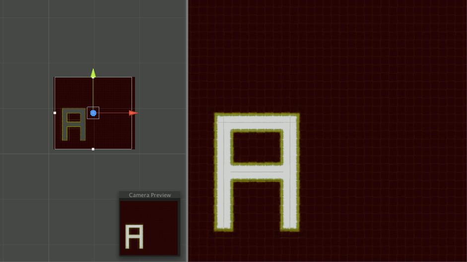

Tile Pooling
Why it's important
Tile pooling is about restricting the memory used on tiles in a game. Since not all tiles in a map will be on your screen, those off-screen tiles serves no purpose and should not be consuming memory.
Applications in our game
Our game is about exploration; we have very large maps –– like 100x100 or something. So it's a real problem when your computer is running at a mere 5FPSFrames per second because it. And Unity, being a 3D engine, does a poor job when it comes to tiling. Each tile is more than just an object; its a GameObject. And Unity has to perform some extra computations for each of them because of it. One potential solution I though of was to make the entire map one image and thus one GameObject. But as you might already know, our maps tiles are alterable as well. Since a stationary image doesn't support creating and removing tiles in our map, I figured that can't be our solution. So we employed some tile pooling.

Information about a tile is cheap. We can store that in a two-dimensional array; it won't affect the FPS, and we can retrieve the data in constant time. So we used that. And to choose which tiles to display? We check the screen dimensions to see which supposed tiles are in view. We do a pass-through of the currently visible tiles –– from outside in –– whenever our screen moves to figure out what to change. We destroy the off-screen tiles to save memory, and create new tiles for those un-represented. If we're even pickier about creating and destroying objects, we can just use a pool of tile objects and move them around.
Neat!